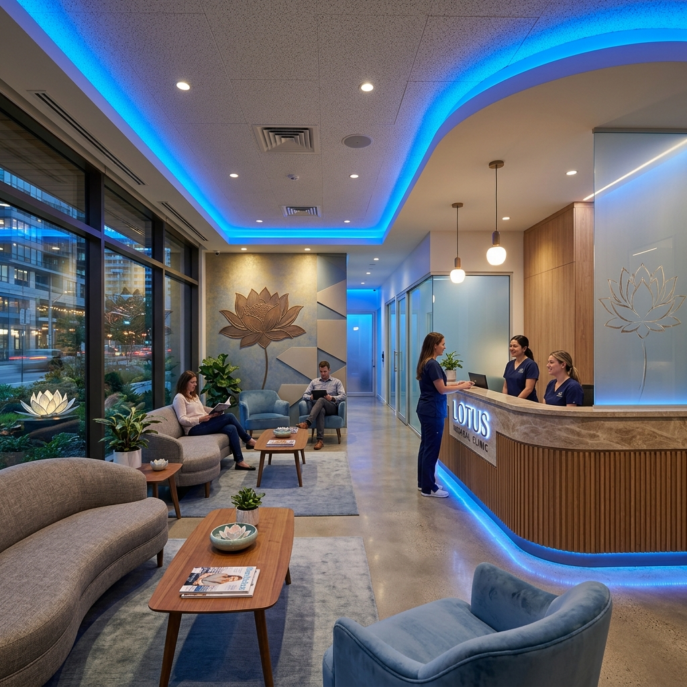
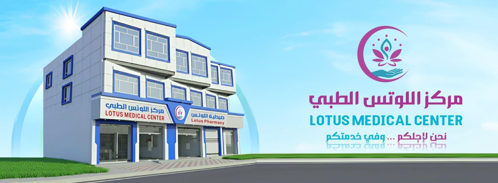

مركز اللوتس الطبي
Lotus Medical Center
شريككم الدائم نحو العافية والجمال. نقدم لكم رعاية طبية استثنائية وعيادات متخصصة مجهزة بأحدث التقنيات لخدمة جميع أفراد عائلتكم في موقع مميز وسهل الوصول.


نسعى في مركز اللوتس الطبي إلى تقديم تجربة علاجية وصحية متميزة تليق بمراجعينا في مدينة صنعاء. نوفر الرعاية الطبية الفائقة بأسلوب يجمع بين الدقة في التشخيص والسرعة في توفير الخدمة، من أجل بيئة علاجية متكاملة تمنحكم وأسركم الطمأنينة والأمان.
طاقم طبي ذو كفاءة وخبرة علمية مشهود لها محلياً لتقديم أفضل تشخيص وعلاج.
نظام متطور يدعم دقة ونجاح الفحوصات الطبية والعلاجات المعاصرة.
نعطي الأولوية لراحة المراجع وخصوصيته لضمان تجربة زيارة مريحة وخالية من التوتر.
نوفر رعاية صحية في مختلف التخصصات الطبية الهامة تحت إشراف طاقم طبي متخصص.
عيادة مجهزة بأحدث الكراسي الطبية والأجهزة التشخيصية لتقديم خدمات تجميل وزراعة الأسنان، تقويم الأسنان، علاج الجذور العصبي، وتركيبات البورسلين والزركون بجمالية وجودة عالية.
نقدم خدمات متكاملة لمتابعة مراحل الحمل والولادة الآمنة، تشخيص وعلاج العقم والاضطرابات الهرمونية، وفحص الأجنة بالموجات الصوتية الملونة بدقة متكاملة للحفاظ على صحة الأم والطفل.
تعنى بتقديم استشارات الصحة الإنجابية المتنوعة، توفير وتركيب جميع وسائل تنظيم الأسرة الآمنة، وتقديم إرشادات متخصصة للمباعدة بين الولادات بما يضمن صحة الأم والمولود.
تشخيص دقيق وعلاج لاضطرابات السمع والاتزان، التهابات الجيوب الأنفية المزمنة، مشاكل اللوزتين وصعوبات البلع، باستخدام أحدث مناظير الأنف والأذن التشخيصية المتطورة.
نستقبل الحالات الإسعافية والطارئة والحروق والجروح على مدار الساعة مع جاهزية تامة لطاقم تمريضي مدرب وأجهزة تنفس ومراقبة علامات حيوية فائقة السرعة.
تكامل الرعاية وتوفير كافة الفحوصات والاحتياجات الدوائية للمريض في مكان واحد وبأعلى مقاييس الجودة.
مختبر مجهز بالكامل بأحدث الأجهزة الآلية والتحاليل المخبرية الدقيقة والسريعة لإجراء كافة الفحوصات الهرمونية، الكيميائية، ودلالات الأورام لمساعدة الأطباء في دقة التشخيص.
تضميد الجروح والغيار الطبي المعقم، خياطة الجروح والإصابات الطفيفة، وتطهير الحروق وعلاجها وفق أعلى معايير مكافحة العدوى والتعقيم التام.
صيدلية المركز الداخلية المتميزة بتوفير كامل الأدوية الموصوفة والبدائل والمستلزمات الطبية المتنوعة وتوفير رعاية صيدلانية متكاملة وإرشادات استخدام الدواء.
أشعة تلفزيونية وسونار حديث لدعم التشخيص ومتابعة الحالات المرضية وتوفير نتائج تصويرية واضحة وموثوقة.
نظام تقني حديث لأرشفة بيانات وحفظ ملفات المرضى وتاريخهم المرضي لضمان سرية المعلومات وتسهيل متابعة وتطور الحالة الصحية بكل سلاسة.
توجيه وإرشاد المرضى وتقديم معلومات تفصيلية لتوجيه المراجع نحو التخصص الطبي المناسب لشرح وتوضيح تفاصيل رحلته العلاجية بالمركز.
تجدون هنا إجابات سريعة للأسئلة المتكررة حول الحجز والخدمات التي يوفرها المركز.